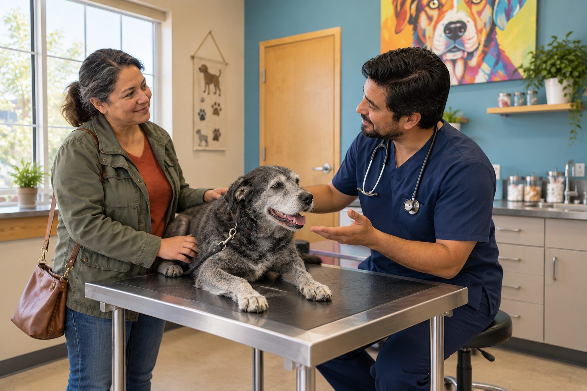

Seek urgent veterinary care for breathing trouble, collapse, seizures, suspected poisoning, major injury, or inability to urinate.
You do not have to diagnose your pet before calling a clinic. The useful question is how quickly a veterinarian should assess the change. Age, medical history, and severity all affect that answer.
Plan routine care
Regular visits support vaccination, parasite prevention, dental checks, and conversations about weight or behavior. Puppies, kittens, seniors, and pets with chronic conditions may need different schedules. Ask your veterinarian what fits your pet.
Bring a short list of questions and note changes in eating, drinking, activity, and toileting. Even small observations can help a professional see a pattern.
Routine visits are the place to discuss concerns that build slowly: weight trends, dental changes, mobility, behavior, diet, and preventive care. The right frequency depends on the animal's age and health, so agree on a schedule with your veterinary team. Before a visit, write down questions in order of importance and bring medication names, food labels, and any home records. A short video of an intermittent cough or limp can help when the sign does not appear in the exam room.
Do not wait for the scheduled check if a new symptom is persistent or worsening. Call the clinic and describe what changed. The team can advise whether to watch, book a prompt appointment, or seek emergency care. A useful phone description includes when it began, what the pet can still do normally, and what has changed in eating, drinking, elimination, and activity.
Call about a new or persistent change
Reduced appetite, repeated vomiting, diarrhea, limping, unusual thirst, skin irritation, or sudden behavior change can warrant advice. A clinic can help decide whether to monitor briefly or book a same-day visit.
Do not wait for a symptom to become dramatic when it is worsening. Cats may hide signs of illness, and young or elderly pets can decline quickly.
A new problem may not look dramatic and still merit a call. Repeated vomiting, refusal of food, ongoing diarrhea, limping, unusual thirst, a new lump, or a noticeable behavior shift deserves professional guidance. The urgency depends on the pet and the accompanying signs. A young healthy dog with one mild episode may receive different advice from an older cat with several conditions. Avoid applying a fixed online waiting period to every animal.
When you call, state any known diseases and medications early. Explain whether the sign is getting better, staying the same, or worsening. If you are unsure whether a cat is urinating, say so clearly; possible urinary obstruction is urgent. Ask what to monitor while waiting and what change would mean calling back sooner. Written instructions prevent misunderstandings among caregivers.

Recognize emergencies
Trouble breathing, collapse, seizures, severe pain, major bleeding, suspected poisoning, and serious injury call for urgent care. Repeated attempts to urinate with little or no output are an emergency, particularly for male cats.
Call ahead if possible so the clinic can prepare. If a toxin may be involved, keep the packaging and follow professional instructions. Do not induce vomiting unless directed.
Some signs should prompt immediate contact with an emergency veterinary service: trouble breathing, collapse, repeated seizures, severe injury, uncontrolled bleeding, marked pain, or suspected poisoning. A pet that repeatedly strains without passing urine also needs urgent assessment. Call as you prepare to travel so the team can direct you to the right facility and advise on safe transport. If a harmful product may be involved, take its packaging or photograph the label. Do not induce vomiting or give human medicine unless a veterinary professional instructs you.
Keep the pet contained and the environment calm. For an injured animal, minimize unnecessary handling; pain can change behavior even in a normally gentle pet. If moving the animal is difficult, ask the clinic for instructions. Searching the internet should not delay an emergency call.
Choose the next step from the signs
| Situation | Practical action |
|---|---|
| Routine prevention or a stable long-term question | Book a planned visit and bring your notes. |
| New, persistent, or worsening symptom | Call the clinic for a timely assessment. |
| Trouble breathing, collapse, suspected poison, or inability to urinate | Contact emergency veterinary care immediately. |
If the situation is uncertain, call and describe exactly what you observed.
When unsure, call
Explain when the problem began, whether your pet is alert, and what other changes you see. A phone conversation may clarify the next step. If your usual clinic is closed and signs are serious, contact an emergency veterinary service.
When the situation is uncertain, a concise phone call is useful. You do not need to diagnose the problem before asking for guidance. Say what you observed rather than what you think it means: for example, the cat visited the box six times and produced almost no urine, or the dog stopped bearing weight on one leg after a jump. Exact observations allow the team to judge urgency more safely. Mention whether the pet is alert, breathing comfortably, eating, and moving normally.
If a clinic is closed, know the number and location of the nearest emergency service in advance. Keep that information with the carrier, leash, and medical records. Preparation saves time when you are worried. If cost or transport is a barrier, tell the veterinary team; they may help prioritize options, but a possible emergency should still be assessed promptly.
Practical details
Routine visits do more than update vaccines
A regular examination creates a record of weight, teeth, heart, mobility, and behavior over time. Your veterinarian can advise on vaccinations, parasite prevention, dental care, and age-related changes. Puppies, kittens, seniors, and pets with a chronic condition often need a different schedule from a healthy adult. The right interval is a conversation with the clinic, not a universal calendar printed on a website.
Prepare a short list of questions before a routine appointment. Small changes that seem easy to forget, such as a pet sleeping more or drinking from a second bowl, can be worth mentioning. Early discussion is easier than trying to reconstruct months of observations when a problem becomes urgent.
Before you call, have these details ready
- Timing When did the change begin, and has it improved, worsened, or come and gone?
- Function Is the pet eating, drinking, breathing, walking, and using the toilet normally?
- Exposure Could the pet have reached a medication, plant, food, or household product?
- Evidence Bring photos, a short video, food packaging, and medication names when available.
Use a prompt call for uncertain changes
Repeated vomiting, diarrhea, limping, new itching, reduced appetite, weight change, or unusual thirst can justify contacting a veterinarian. The clinic can triage based on your pet's age, medical history, and the severity of the signs. A symptom that is mild in one adult pet may be more concerning in a young, elderly, or medically fragile animal.
Do not wait for a diagnosis before calling. Describe what you see and ask when the pet should be examined. Photos of skin changes, videos of unusual movement, and a timeline of food and water intake can make that conversation more precise. If the pet worsens while you are waiting for an appointment, call back.
Build a small health log for each pet. Record major diagnoses, current medications, allergies, the usual diet, and the date of the last examination. Add baseline notes on weight, appetite, and behavior. The log does not replace a medical record, but it makes a phone call more accurate when a different family member is caring for the animal. Keep emergency contact numbers accessible rather than buried in a phone search history.
For recurring symptoms, note frequency and duration without performing risky tests at home. A video of an episode can help, but do not provoke the pet to capture one. If a symptom becomes more frequent or is accompanied by weakness, pain, or breathing changes, call again even if an earlier assessment suggested monitoring. Plans should change when the facts change.
Emergency signs require immediate help
Trouble breathing, collapse, seizures, major bleeding, severe pain, suspected poisoning, heatstroke, serious trauma, and inability to urinate need urgent care. In a cat, repeated trips to the litter box with little or no output are especially concerning. Contact an emergency veterinary service if your regular clinic is closed. Call ahead when possible so the team can prepare.
Do not give human medicine, induce vomiting, or attempt a risky home treatment while waiting for advice. If a toxin is involved, keep packaging and follow a veterinarian or poison specialist's instructions. The purpose of this guide is to help you choose the next step, not to replace professional triage for your individual pet.
After a visit, ask three practical questions: What should we do at home, what changes should make us call back, and when is the recheck? If medication is prescribed, confirm the dose, timing, and what to do if a dose is missed. Do not share one pet's prescription with another. If the pet refuses medication or cannot keep food down, contact the clinic rather than silently stopping the plan. Follow-up is part of treatment, not an optional extra.
Think of veterinary care as a continuum. Routine prevention catches slow changes; timely appointments assess new concerns; emergency services address signs that cannot safely wait. The threshold is not whether you can explain the symptom. It is whether the animal is comfortable and stable, and whether delay could cause harm. A quick call can help you make that distinction.
Create a plan before a crisis. Save the regular clinic number, an after-hours emergency number, and the route to the nearest emergency facility. Keep a carrier or leash accessible and know where the pet's medication list is stored. If several people care for the animal, make sure each knows the plan. Preparation is particularly helpful for a pet with a chronic condition or a household where transport is difficult. You can discuss likely warning signs with your veterinarian during a routine visit.
When calling about a concern, state the most urgent fact first: trouble breathing, inability to urinate, collapse, suspected poison, or severe pain. Then add the timeline and other symptoms. This helps the clinic triage efficiently. If asked to monitor at home, write down the specific signs and time frame given. Call again if the pet worsens or the instructions are unclear. Seeking guidance early is a practical part of responsible care, not a failure to handle the problem yourself.
Prepare for the call or visit
Write down when the problem began, whether it is getting worse, and what your pet can still do normally. Include appetite, water intake, urination, stool, activity, and any medications or possible exposures. If breathing, movement, or an unusual episode is involved, a short video can help the clinic understand what you saw. Keep the description factual and avoid delaying a call while you search for a perfect explanation.
For a possible emergency, phone the clinic or emergency service while arranging transport. Ask where to go, what to bring, and whether you should avoid offering food or medication. Keep your pet safely contained and minimize stressful handling. For a routine concern, booking an appointment early can still prevent the problem from becoming harder to manage.
After the visit, keep the written plan where everyone caring for the pet can see it. Know which changes mean you should call back and when a recheck is due. If instructions are unclear, ask the veterinary team to explain them in plain language. Following up on a change is part of good care, not an inconvenience.
If cost or transport is a barrier, say so when you call. The team may be able to explain priorities and available options. Clear communication gives them a better chance to help you make a practical decision for your pet.
Save the clinic's contact number and the nearest emergency service in your phone before you need them. Know your pet's current medications, usual diet, and recent medical history. In a stressful moment, having that information ready makes the call faster and clearer.
Continue exploring
For a broader routine, read Why Does My Dog Scratch Even When He Doesn't Have Fleas?, Why Is My Dog Shaking? Common Reasons Explained, and How to Track Your Pet's Weight at Home.
Frequently Asked Questions
Is one missed meal an emergency?
It depends on age, health, and other symptoms. Ask your veterinarian if you are concerned.
Can a photo replace a vet visit?
A photo may help triage, but it cannot replace an examination when one is needed.
Should I wait until morning for breathing trouble?
No. Seek urgent veterinary care.
Editorial references
These resources informed the general guidance in this article. They do not replace advice tailored to your pet.
This guide offers general information. Your pet’s age, health, and history may call for a different plan. For medical concerns, ask your veterinarian.